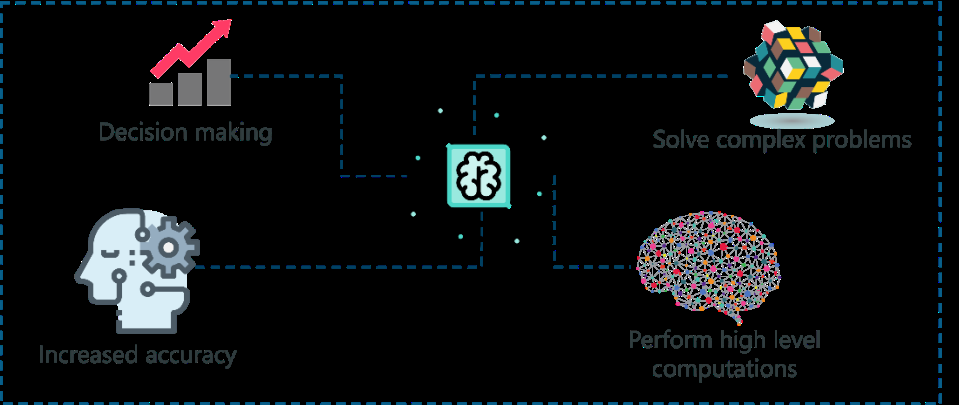

Artificial Intelligence
Links:
Artificial Intelligence on A Conceptual Level
Artificial Intelligence is the simulation of human intelligence done by machines programmed by us. The machines need to learn how to reason and do some self-correction as needed along the way.
Now that we have detailed algorithms which Artificial Intelligence systems can make use of, they can perform huge tasks faster and more efficiently.
Machine Learning and Deep Learning are just ways to achieve Artificial Intelligence.
Artificial Intelligence can also be defined as the development of computer systems that can perform tasks that require human intelligence, such as decision making, object detection, solving complex problems.
